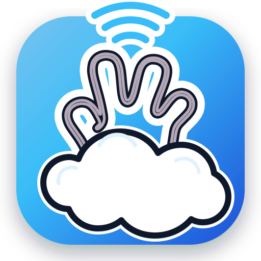

按方案一进行全新设计：“云朵袖口 + 涂鸦手掌 + 指尖声波”。 完美继承原版 Handy 标志性的粗描边涂鸦手势与贴纸质感（Die-cut Sticker），在手腕处无缝衔接一团蓬松圆润的云朵袖口，指尖发散 3 道手绘语音声波。
【强烈推荐 · 经典传承】采用原版经典 #FAA2CA 糖果粉手掌，粗黑马克笔描边，底部包裹纯白蓬松云朵袖口，上方点缀天青指尖声波。粗白色贴纸切边与环境柔光，涂鸦潮流感拉满！
原版血统 · 推荐纯白手掌配以深黑描边，手腕处为糖果天蓝云朵袖口，指尖为清透电光蓝声波。色调更偏向云端生产力工具的清新与纯净。
清爽天蓝
契合现代 macOS 与 Windows 11 图标规范：深邃天青渐变底座（#78c3ef -> #1d4ed8），内部容纳立体贴纸风的涂鸦手与云朵袖口。
桌面原生规范